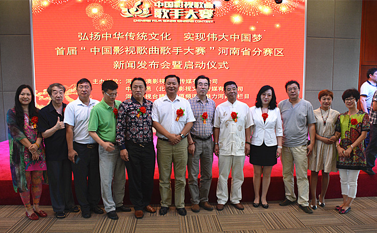
2015年8月29日上午，首届“中国影视歌曲歌手大赛”河南省赛区新闻发布会暨启动仪式在郑州隆重举行。中国影视歌曲歌手大赛组委会主席姜国顺,执行主席高洁,副主席杜光明,刘金英,秘书长张国顺,中国文联艺术中心主任曾正国,中国作家协会中华文苑网总编黄国光,北京市口哨协会贾月亮,孙明,大象融媒集团睛彩中原频道副总监周海涛,郑州电视台文体频道导演、制片主任、大赛河南省赛区组委会副主席张卫星,中澳影视文化传媒公司董事长、中国影视歌曲歌手大赛河南省赛区组委会主席郭中民,河南省歌词作家作品主编丁留强,河南电视台著名主持人李宏伟参加了此次发布会。
“中国影视歌曲歌手大赛”旨在让全国人民欣赏歌手们演唱才华的同时，回忆起那些光彩照人的偶像角色，聆听每一段壮丽的历史，圆梦每一个人心中美好的未来。首届“中国影视歌曲歌手大赛”将是一次亲和的盛举。赛事以全国各省为分赛区，在规定时间内选出选手参加全国总决赛。全国总决赛自初赛开始将通过电视、网络、平面等各大媒体以大场景、大画面、全民共同参与、别开生面的风格，展现出全中国人民的精神风采。选手参赛内容必须是演唱中国新老电影、电视、记录片、风光片的主题曲、插曲。大赛将本着“公开、公平、公正”的原则，通过层层选拔挖掘大众喜爱的优秀歌手，为中国影视文化艺术的发展培养和输送人才。
发布会现场，中国影视歌曲歌手大赛组委会主席姜国顺、大象融媒集团睛彩中原频道副总监周海涛、大赛河南省赛区组委会主席郭中民发表了重要讲话。来自北京市口哨协会的贾月亮，孙明老师给大家带来了精彩的口哨表演。中国影视歌曲歌手大赛河南赛区组委会主席郭中民也在现场跟口哨协会的两位老师合作给大家带来了一场视听盛宴。
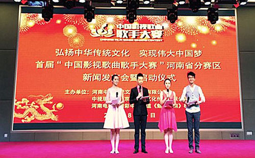
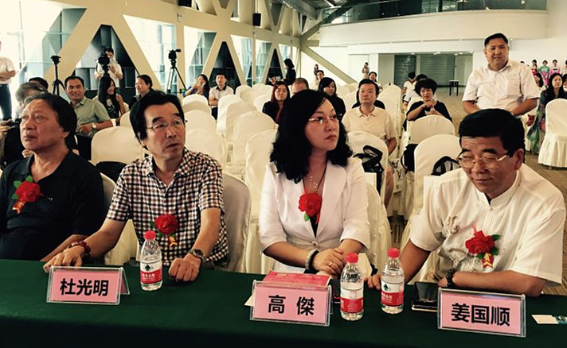
左一：中国作家协会中华文苑网总编 黄国光
左二：大赛组织委员会副主席 杜光明
左三：大赛组织委员会执行主席 高洁
左四：大赛组织委员会主席 姜国顺
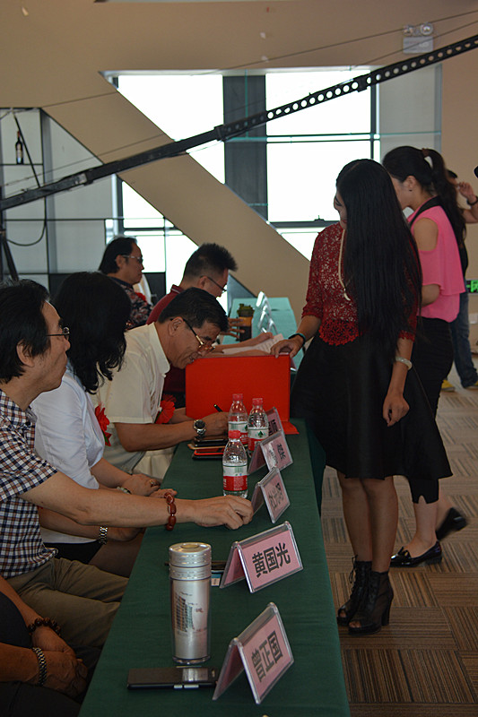
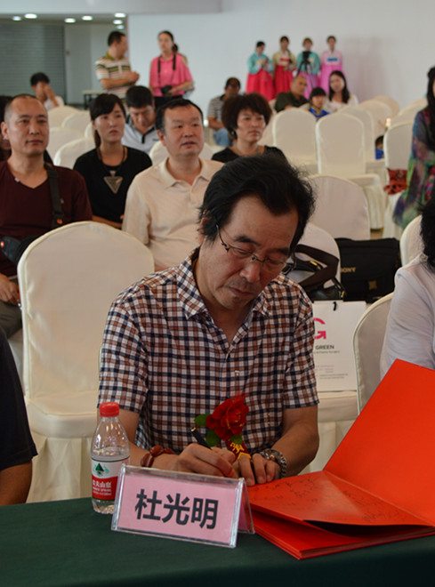
大赛组织委员会副主席 河南赛区总监 杜光明
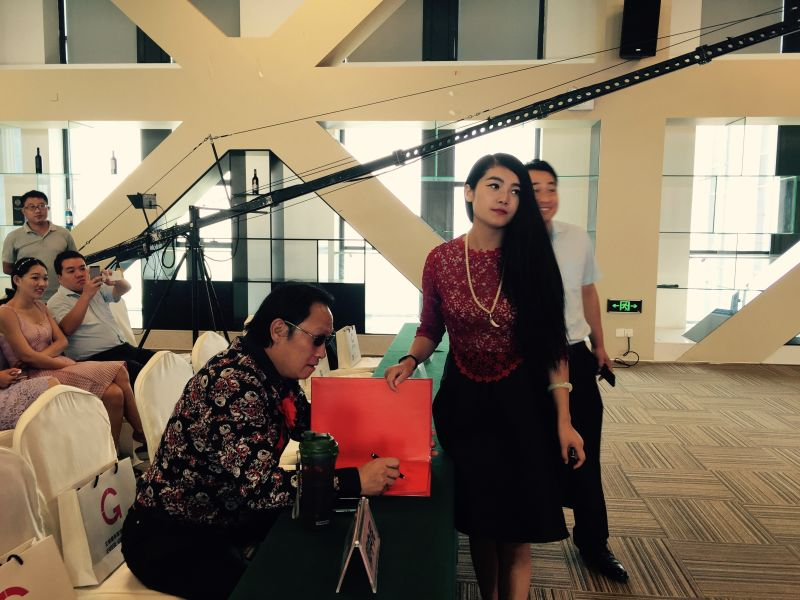
大赛组织委员会秘书长 河南省赛区艺术总监导演 张国顺
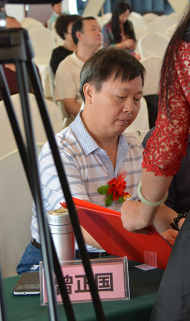
中国文联艺术中心主任 曾正国
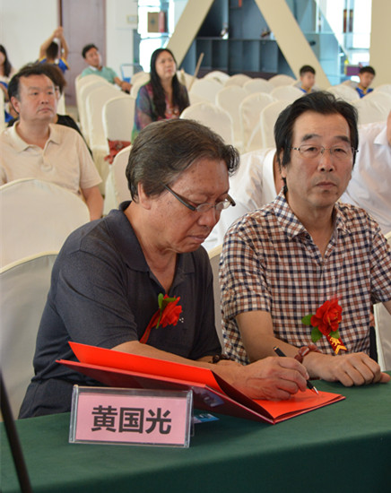
中国作家协会中华文苑网总编 黄国光
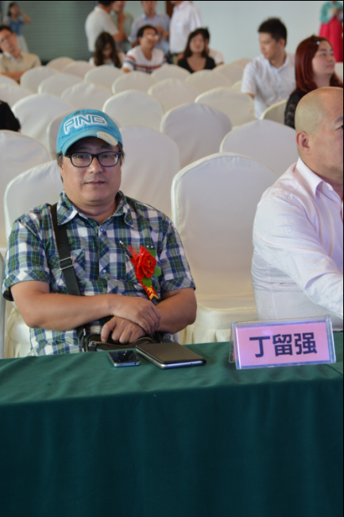
河南省歌词作家作品主编 丁留强
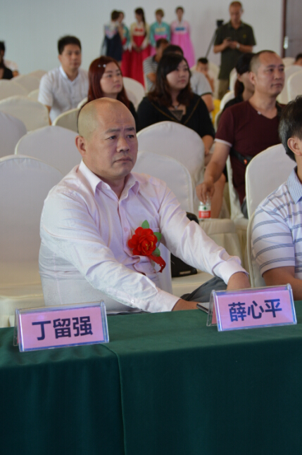
河南省企业家代表 薛心平
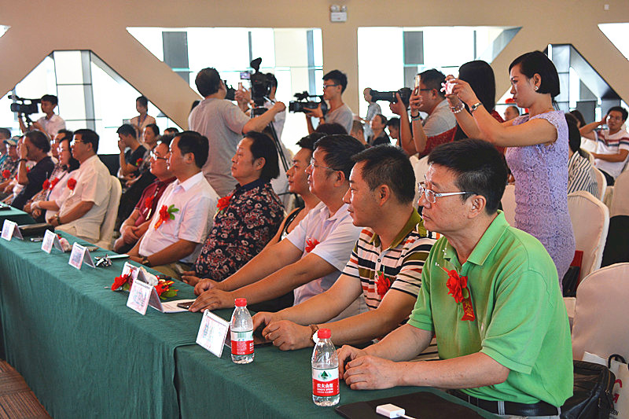
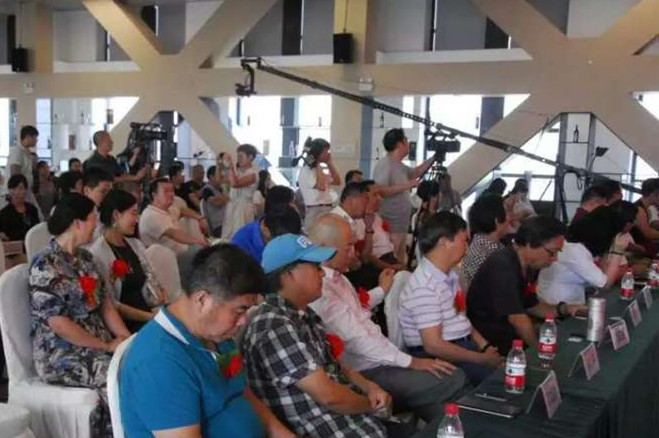
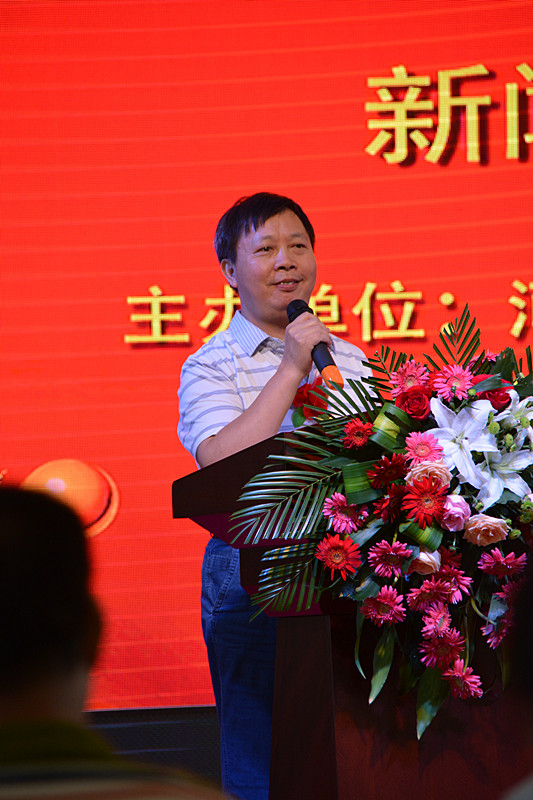
中国文联艺术中心主任 曾正国 致词
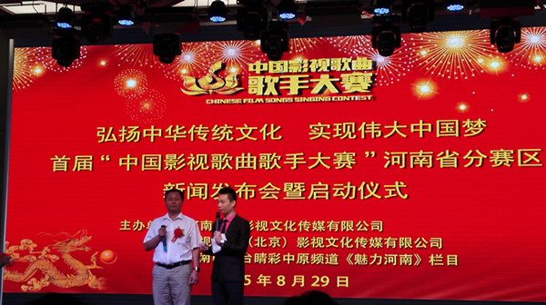
中国影视歌曲歌手大赛河南赛区主席 曾正国 致词
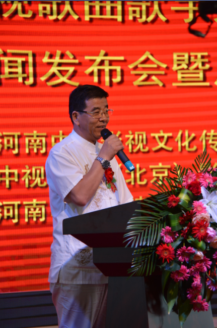
大赛组织委员会主席 姜国顺 致词
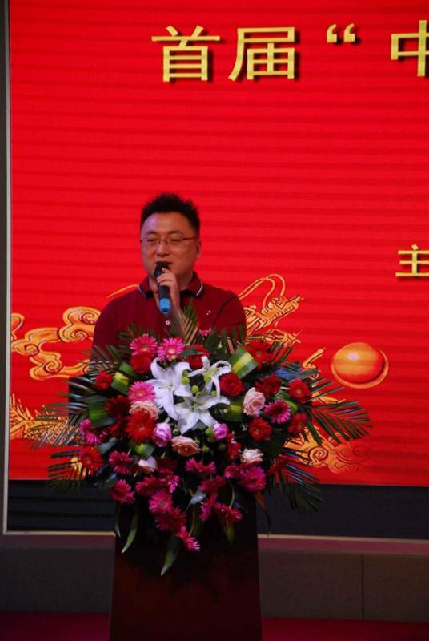
大象融媒集团睛彩中原频道副总监 周海涛
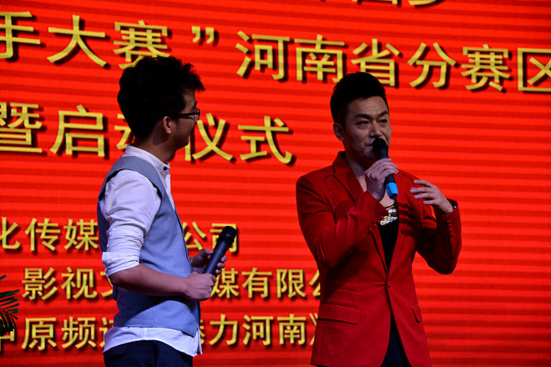
右：河南电视台著名主持人 李宏伟
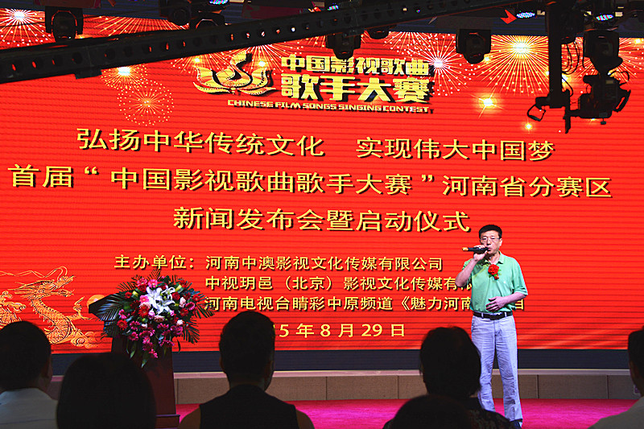
北京市口哨协会 贾月亮
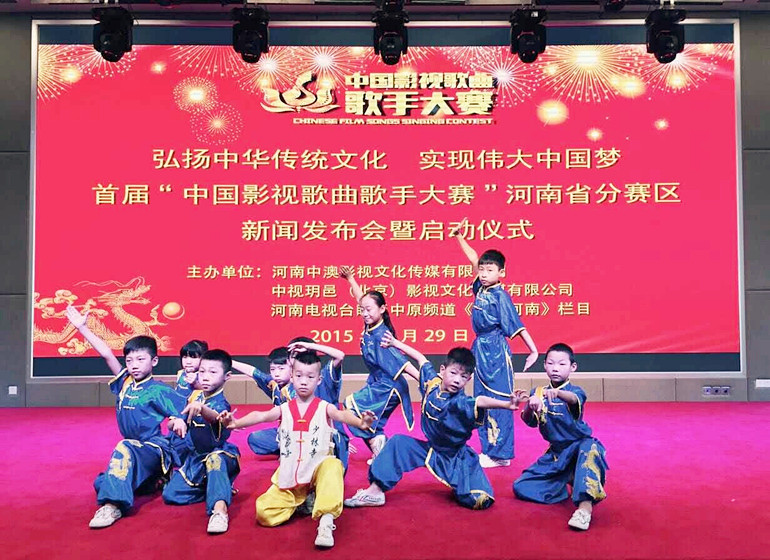
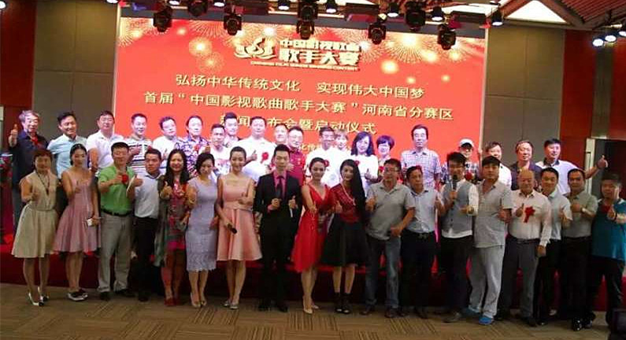
下一篇：黑龙江省、吉林省赛区报名启动